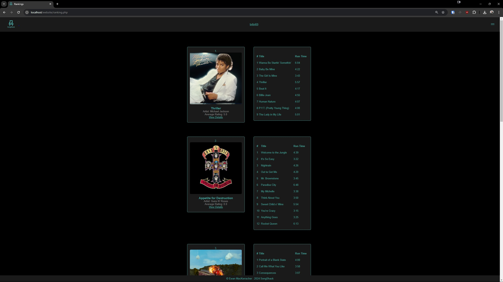
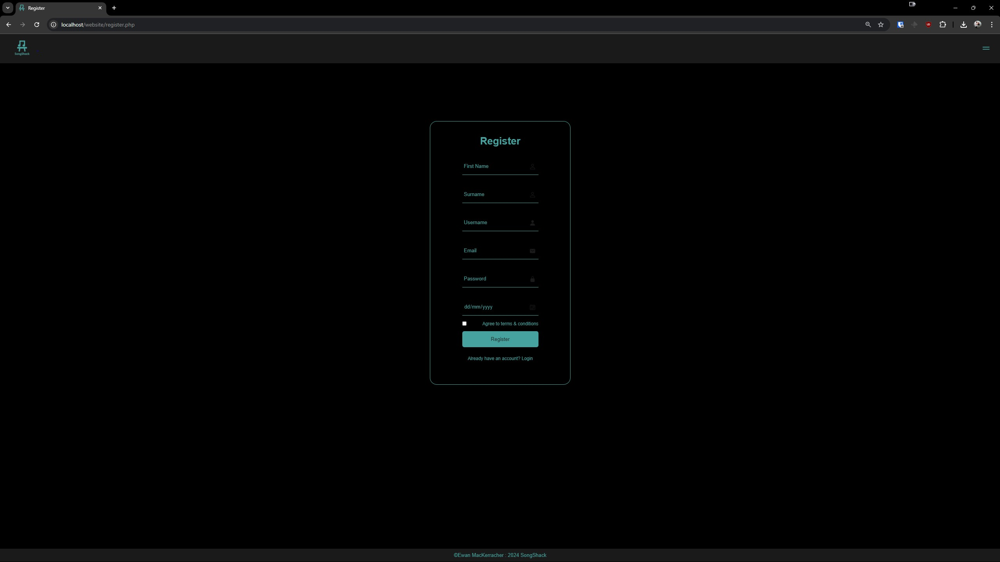

A fully functional music recommending website for First year Web Development module

Including custom pages about each album along with the ability to review them
A dynamically changing ranking system based on user revies
A fully functional login/register page

A profile page allowing you to change your account data and change your favourite song